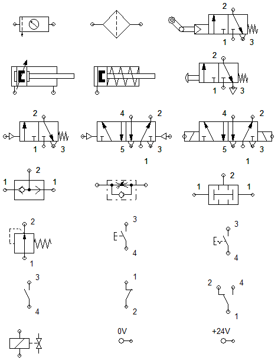

Cuestionario para examen 2º Parcial
- Cuál es la función general de un cilindro; es decir, cómo es la conversión de energía?
- A qué se le llama carrera de avance y retroceso
- Dibujar el cilindro de simple efecto e indicar sus partes
- Mencione al menos 2 tios de accionamiento de las válvulas
- Cómo es la operación de una válvula check o antetirretorno
- Describa la esctructura de un sistema neumático
- Explique cómo esta operando el siguiente circuito detalladamente; es decir, qué está realizando cada elemento en cada momento

- Indicar el nombre de los siguientes elementos completo
